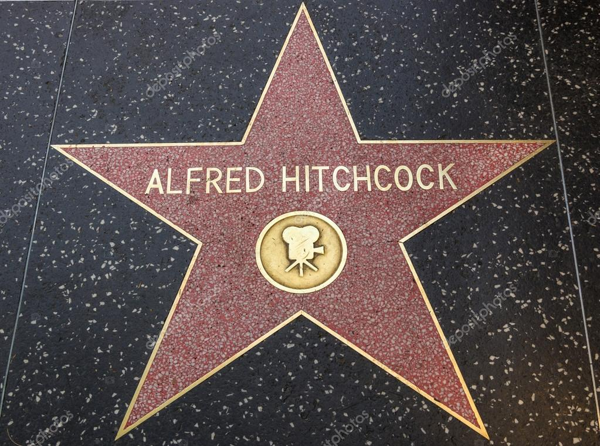

WELCOME!!
En esta web encontrarás todo sobre "Rebecca", el éxito cinematográfico de 1940, del director británico Alfred Hitchcock. Al poco tiempo de perder a su esposa Rebeca, el aristócrata inglés Maxim De Winter conoce en Montecarlo a una joven humilde,
dama de compañía de una señora americana. De Winter y la joven se casan y se van a vivir a Inglaterra, a la mansión de Manderley,
residencia habitual de Maxim. La nueva señora De Winter se da cuenta muy pronto de que todo allí está impregnado del recuerdo de Rebeca.
Reparto:
Laurence Olivier: Maximilian De Winter Joan Fontaine: Segunda señora de Winter George Sanders: Jack Favell Judith Anderson: Señora Danvers Nigel Bruce:Mayor Giles Lacy Reginald Denny: Frank Crawley C.Aubrey Smith: Cnel.Julyan Gladys Cooper: Beatrice Lacy Género:Drama. Intriga.
Diretor: Alfred Hitchcock. Guión: Robert E. Sherwood, Joan Harrison (Novela: Daphne du Maurier). Música: Franz Waxman. Fotografía: George Barnes (B&W). Productora: Selznick International Pictures. Premios: 1940:2 Oscars: Mejor película, fotografía. 11 nominaciones. Curiosidades
Acontinuación te relataremos una serie de curiosidades que surgieron a raíz de la grabación de esta película: Fue la primera película que Alfred Hitchcock rodó en Estados Unidos. Debido al éxito que tuvo la película, en España se empezó a llamar rebeca al tipo de chaqueta que luce Joan Fontaine a lo largo de toda la película, aunque ella no fuera Rebeca. El Diccionario de la Real Academia Española ha incluso recogido el término para denominar a este tipo de prenda. 
En el guión original, el nombre de la protagonista era Daphne en honor a la autora de la novela, Daphne Du Maurier. David O. Selznick puso objeciones y finalmente el nombre de la protagonista desapareció 
El actor inglés Laurence Olivier trató horriblemente a Joan Fontaine durante el rodaje. Esto afectó a la actriz, y Hitchcock aprovechó para hacerle creer que todo el mundo del equipo de rodaje la odiaba, haciéndola más tímida y reservada, justo lo que quería el director para el personaje. 
Existe una serie angloalemana basada en la misma novela de Daphne du Maurier en el año 1997. |